行为型设计模式
行为型设计模式用于不同对象之间职责划分或算法抽象，行为型设计模式不仅仅涉及类和对象,还涉及类或对象之间的交流模式并加以实现
模板方法模式
模板方法模式(Template Method):父类中定义一组操作算法骨架，而将一些实现步骤延迟到子类中，使得子类可以不改变父类的算法结构的同时可重新定义算法中某些实现步骤。
多用于归一化组件
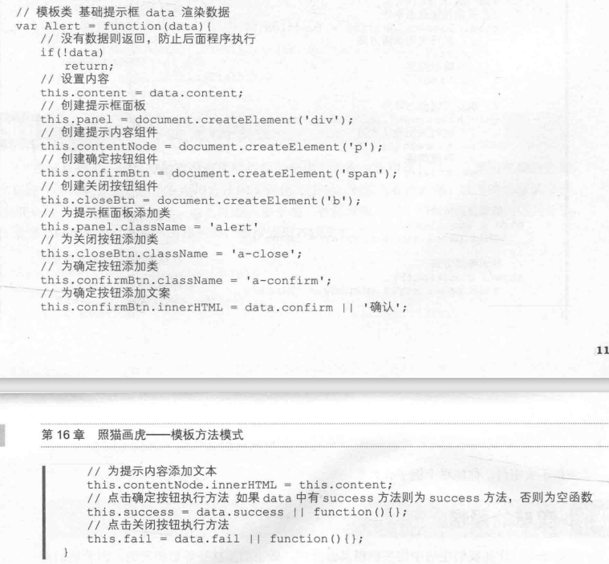
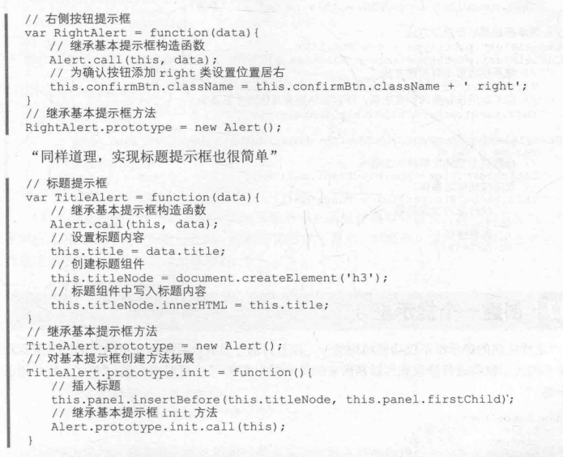
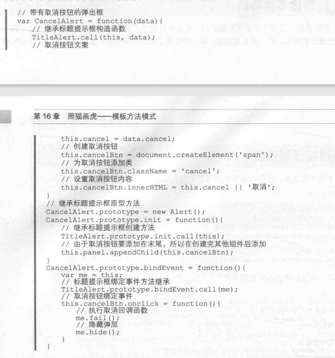
观察者模式
观察者模式(Observer):又被称作发布-订阅者模式或消息机制，定义了一种依赖关系，解决了主体对象与观察者之间功能的耦合。
观察者对象包含：一个消息容器，订阅消息方法、取消订阅的消息方法、发送订阅的消息方法
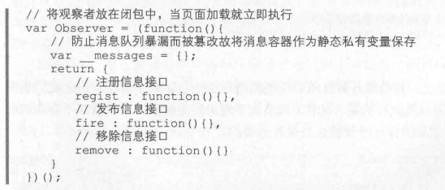
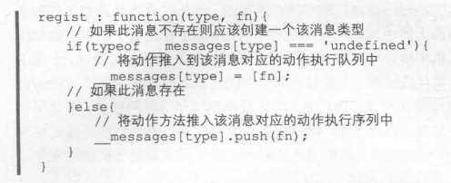
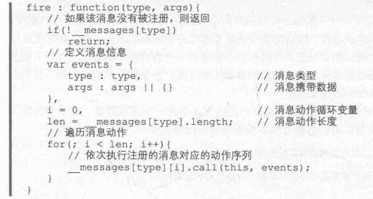
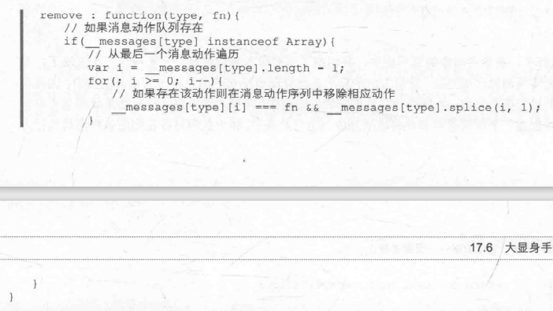
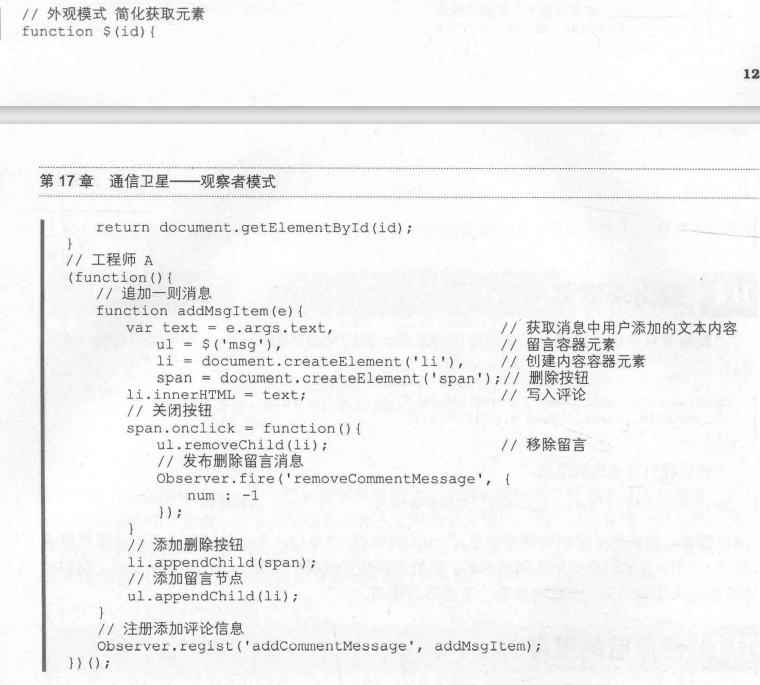
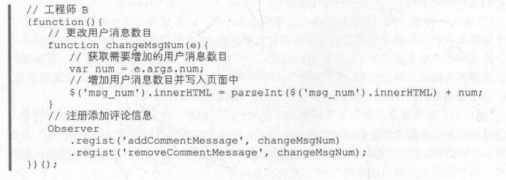
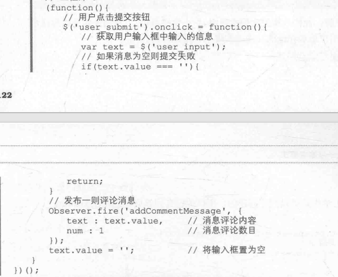
状态模式
状态模式(State):当一个对象的内部状态发生改变时，会导致其行为的改变，这看起来像是改变了对象。
状态模式简化了分支判断遍历逻辑
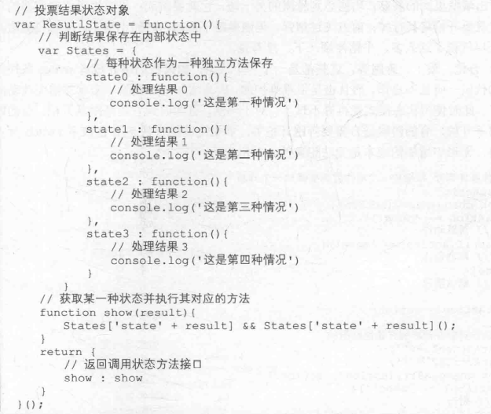
示例
思路：首先创建一个状态对象，内部保存状态变量，然后内部封装好每种,动作对应的状态，最后状态对象返回一个接口对象，它可以对内部的状态修改或者调用
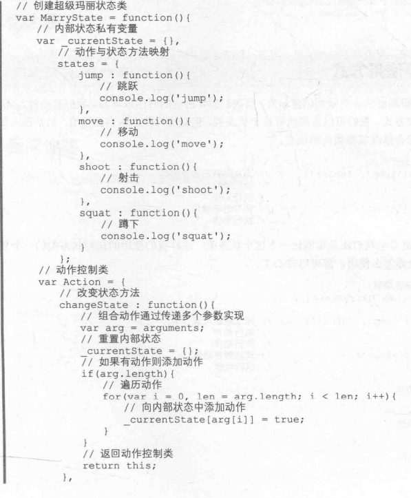
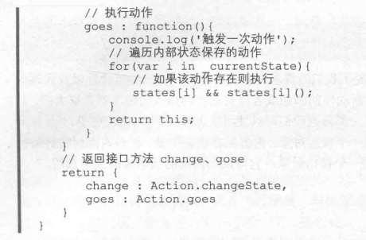
策略模式
策略模式(Strategy):将定义的一组算法封装起来，使其相互之间可以替换。封装的算法具有一定独立性，不会随客户端变化而变化。
与状态模式异同点
相同点：结构上与状态模式很像，也是在内部封装一个对象，然后通过返回的接口对象实现对内部对象的调用
不同点：策略模式不需要管理状态、状态间没有依赖关系、策略之间可以相互替换、在策略对象内部保存的是相互独立的一些算法
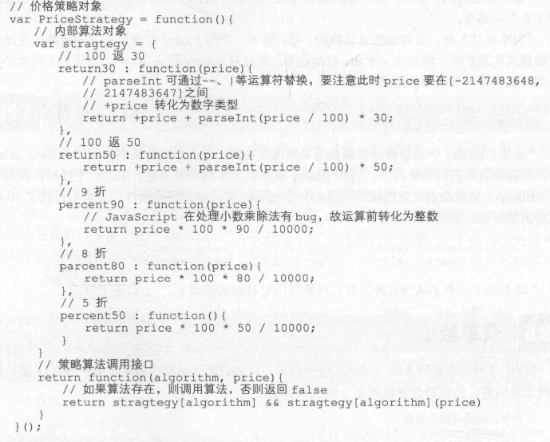
策略模式的优点
第一，策略模式封装了一组代码簇，并且封装的代码相互之间独立，便于对算法的重复引用，提高了算法的复用率。
第二，策略模式与继承相比，在类的继承中继承的方法是被封装在类中，因此当需求很多算法时，就不得不创建出多种类，这样会导致算法与算法的使用者耦合在一起,不利于算法的独立演化，并且在类的外部改变类的算法难度也是极大的。
第三，同状态模式一样,策略模式也是一种优化分支判断语句的模式,采用策略模式对算法封装使得算法更利于维护。
策略模式的缺点
由于选择哪种算法的决定权在用户，所以对用户来说就必须了解每种算法的实现,增加了用户对策略对象的使用成本。
由于每种算法间相互独立，这样对于一些复杂的算法处理相同逻辑的部分无法实现共享，这就会造成一些资源的浪费
优化分支语句的模式
工厂方法模式，状态模式与策略模式
工厂方法模式：一种创建型模式，最终目的是创建对象。
状态模式是行为型模式，不过在状态模式中，其核心是对状态的控制来决定表现行为，所以状态之间通常是不能相互替代的，否则将产生不同的行为结果。
策略模式是行为型模式，核心是算法，由于每种算法要处理的业务逻辑相同，因此他们可以相互替换，当然策略模式并不关心使用者环境，因为同一种策略模式最终产出的结果是一定的。
职责链模式
职责链模式(Chain of Responsibility):解决请求的发送者与请求的接受者之间的耦合，通过职责链上的多个对象对分解请求流程，实现请求在多个对象之间的传递，直到最后一个对象完成请求的处理。
示例
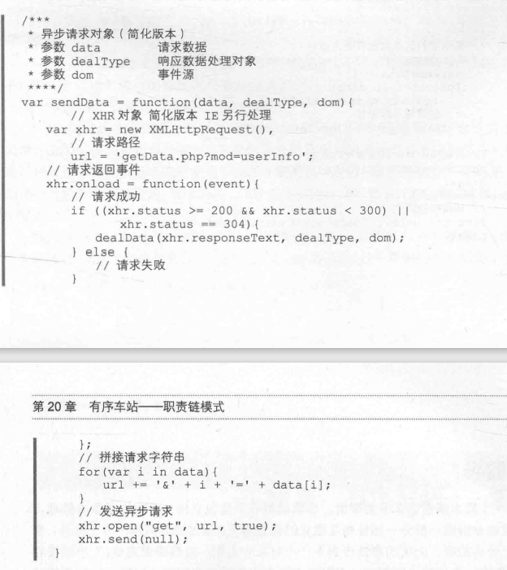
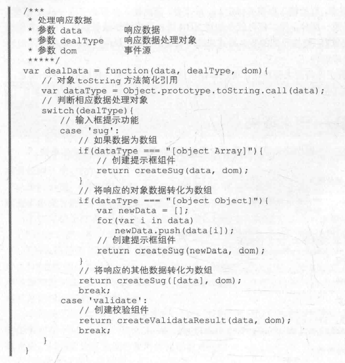
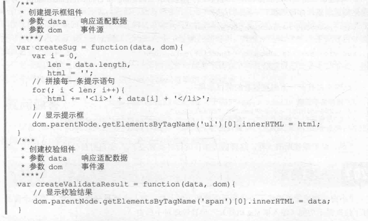
缺点
职责链上的每一个对象不一定都能参与请求的传递，有时会造成一丝资源的浪费
多个对象参与请求的传递，在代码调试时增加了调试成本
命令模式
命令模式(Command):将请求与实现解耦并封装成独立对象，从而使不同的请求对客户端的实现参数化。
命令模式常用于解耦
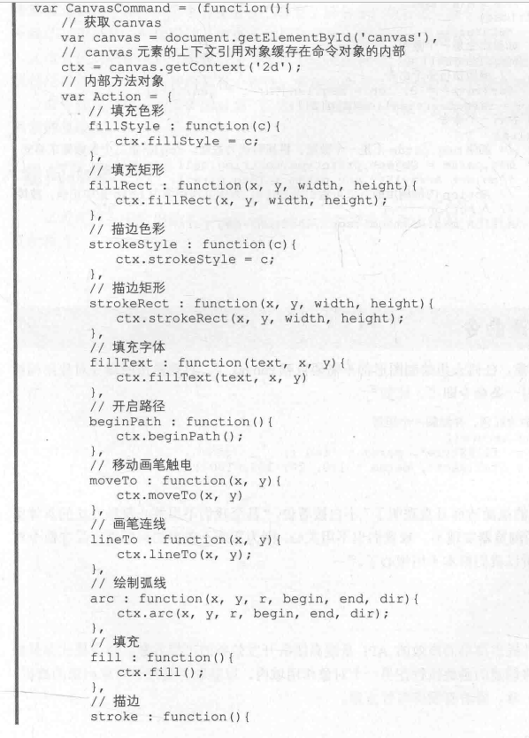
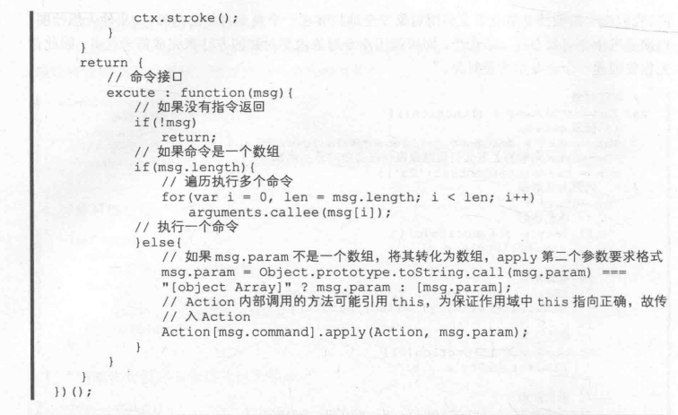
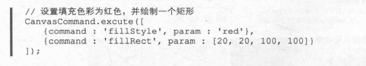
命令模式的优点:
解决命令使用者之间的耦合。新的命令很容易加入到命令系统中，供使用者使用。
命令的使用具有一致性，多数的命令在一定程度上是简化操作方法的使用的。
命令模式的缺点:
命令模式是对一些操作的封装，这就造成每执行一次操作都要调用一次命令对象，增加了系统的复杂度。
访问者模式
访问者模式(Visitor):针对于对象结构中的元素，定义在不改变该对象的前提下访问结构中元素的新方法。
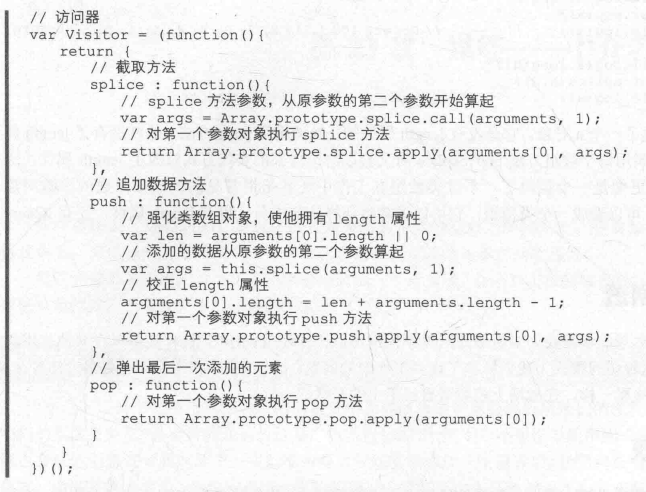
中介者模式
中介者模式(Mediator):通过中介者对象封装一系列对象之间的交互，使对象之间不再相互引用，降低他们之间的耦合。有时中介者对象也可改变对象之间的交互。
(1)观察者模式与中介者模式的区别
相同点
都是通过消息的收发机制实现的
差异点
在观察者模式中，一个对象既可以是消息的发送者也可以是消息的接收者，他们之间信息交流依托于消息系统实现的解耦,需要写一个消息系统
中介者模式中消息的发送方只有一个，就是中介者对象，而且中介者对象不能订阅消息，只有那些活跃对象(订阅者)才可订阅中介者的消息，当然你也可以看作是将消息系统封装在中介者对象内部，所以中介者对象只能是消息的发送者
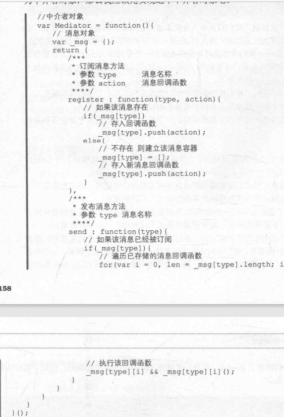
备忘录模式
备忘录模式(Memento):在不破坏对象的封装性的前提下，在对象之外捕获并保存该对象内部的状态以便日后对象使用或者对象恢复到以前的某个状态。
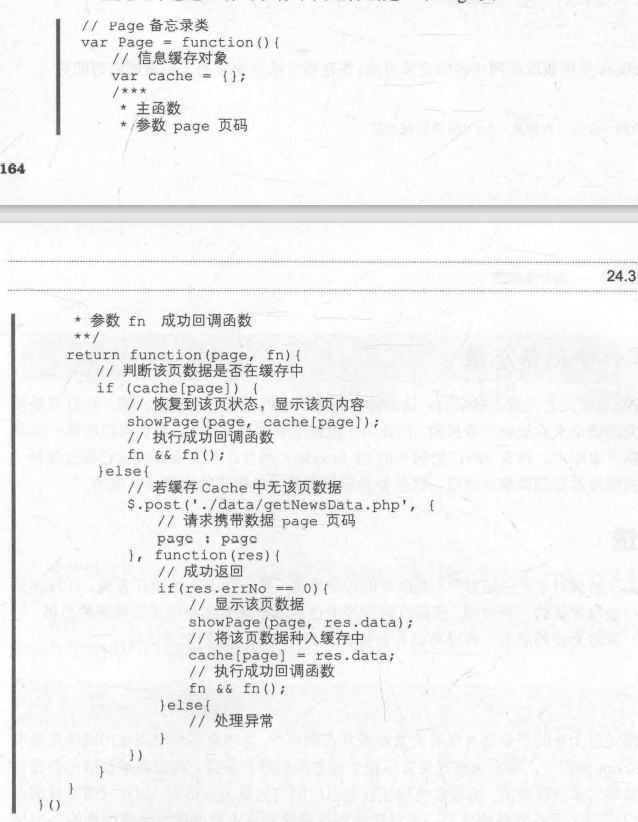
迭代器模式
迭代器模式(Iterator):在不暴露对象内部结构的同时，可以顺序地访问聚合对象内部的元素。
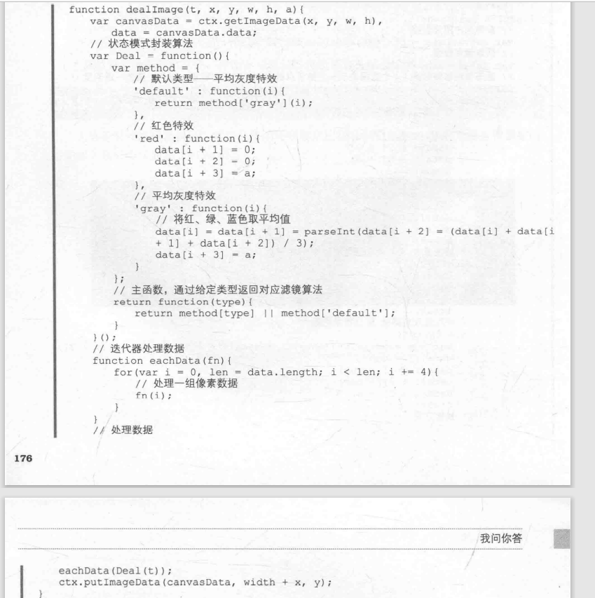
解释器模式
解释器模式(Interpreter):对于一种语言，给出其文法表示形式，并定义一种解释器，通过使用这种解释器来解释语言中定义的句子。
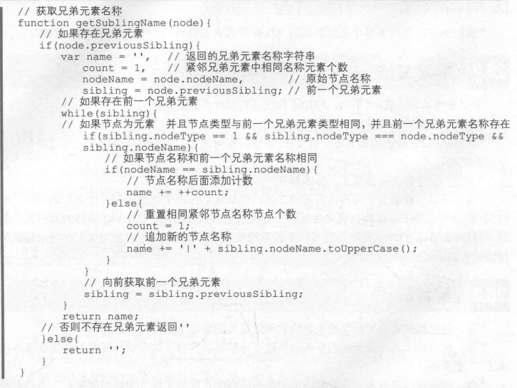
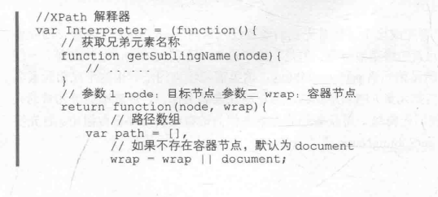
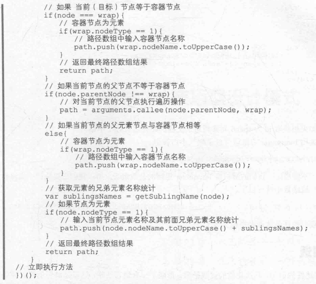
解释器即是对客户提出的需求，经过解析而形成的一个抽象解释程序。而是否可以应用解释器模式的一条重要准侧是能否根据需求解析出一套完成的语法规则,不论该语法规则简单或是复杂都是必须的。因为解释器要按照这套规则才能实现相应的功能。

Sukoshi
贵在坚持
84
0
2